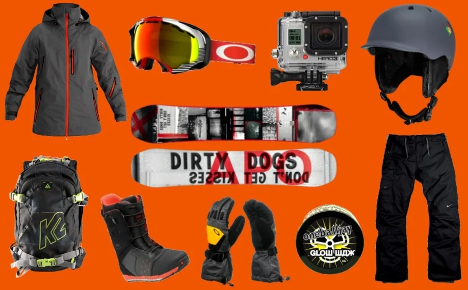
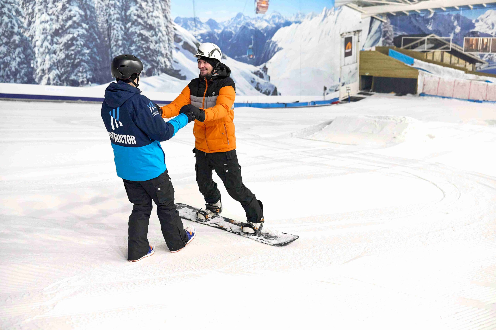
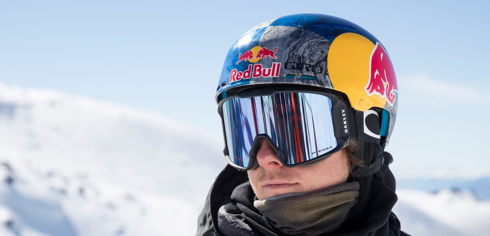
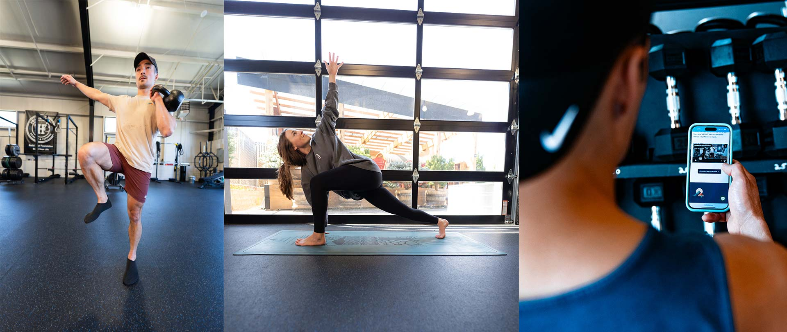

Gear Setup
Proper gear makes all the difference. Beginners should rent equipment before buying to test different setups. Intermediate riders may want to invest in their own board and boots tailored to their riding style.
Beginner Tips
- Start on gentle slopes and practice balance.
- Learn how to stop before learning tricks.
- Take a lesson with a certified instructor for faster progress.
Safety Tips
Warm up before riding, check slope conditions, and always follow resort rules. In the backcountry, carry avalanche gear (beacon, probe, shovel) and ride with a partner trained in avalanche rescue.
Physical Fitness
Snowboarding requires core strength, leg endurance, and flexibility. Off-season training like squats, balance exercises, and yoga can significantly improve performance and reduce injury risk.
Season Preparation
Preparing before winter makes your first days on the slopes more enjoyable and safer. Off-season training—such as squats, lunges, and balance work— keeps your legs and core strong. Stretching or yoga improves flexibility and reduces the risk of strains.
Before heading out, check your gear: make sure bindings are tightened, boots fit properly, and outerwear is waterproof. Mental preparation matters too— set small goals for your first rides and build up gradually as your confidence grows.